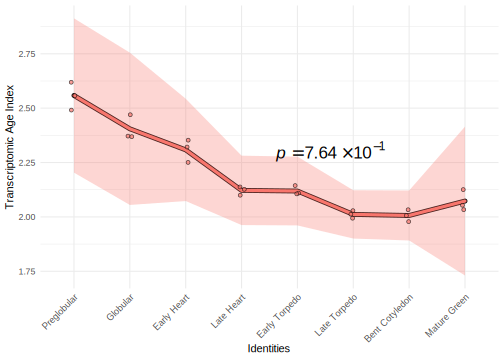

myTAI unlocks statistically-informed analysis of evolutionary signals hidden in the gene expression data (transcriptome)
library(myTAI)
# obtain an example phylo-expression object
data("example_phyex_set")
# plot away!
myTAI::plot_signature(example_phyex_set) 
Initially inspired by the need to statistically evaluate the ‘molecular hourglass’ pattern that linked transcriptome evolution to 19th-century embryo studies, the original myTAI package has since evolved to facilitate fast and robust analysis of any transcriptome evolution patterns, from embryo development[1] to cancer progression and drug perturbation experiments.
What can myTAIv2 do?
⚡ Ultra-fast computations → rapid permutation tests that scales to single-cell genomics.
🦾 Moved on from traditional R data structures to modern S7 classes → optimised handling of large ‘phylo-expression’ datasets.
🔨 Break your hourglass → uncover the genes driving your transcriptome evolution patterns.
⌛ Aesthetic plots → publication-ready information-rich figures!
Get started with myTAI → 🍹
Cite myTAI for your own research.
Drost et al. myTAI: evolutionary transcriptomics with R. Bioinformatics 2018, 34 (9), 1589-1590. doi:10.1093
And follow @DrostLab for more bioinformatics and digital biology software solutions.
[1] some early studies include Kalinka et al. (2010) Nature, Domazet-Lošo & Tautz (2010) Nature, Quint et al. (2012) Nature